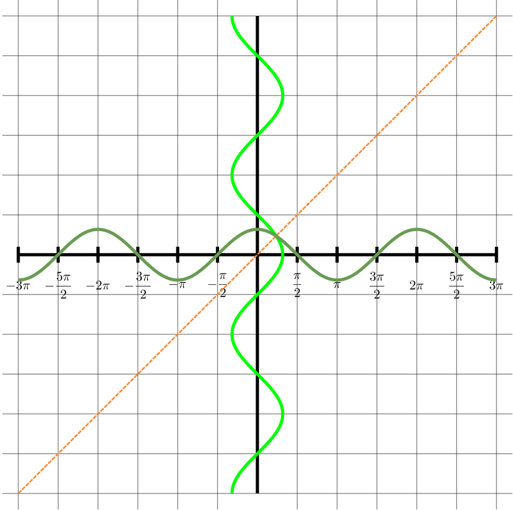
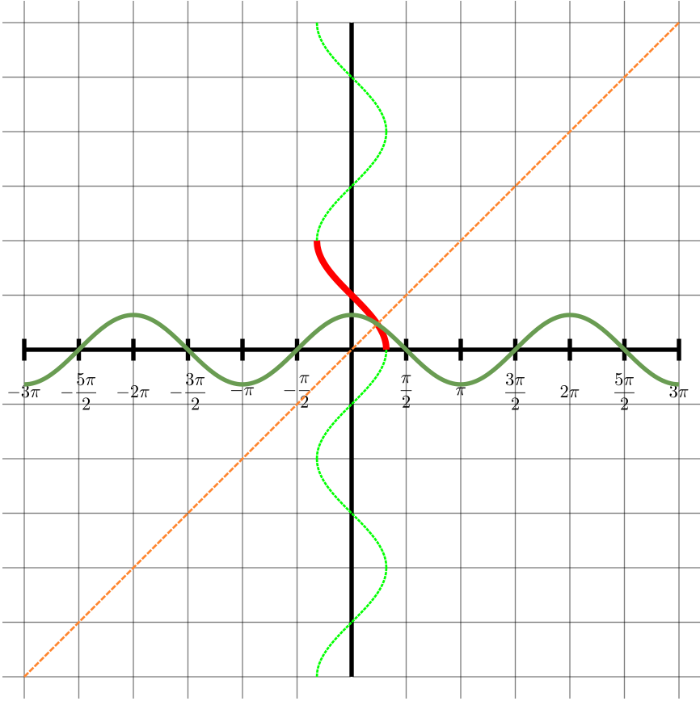
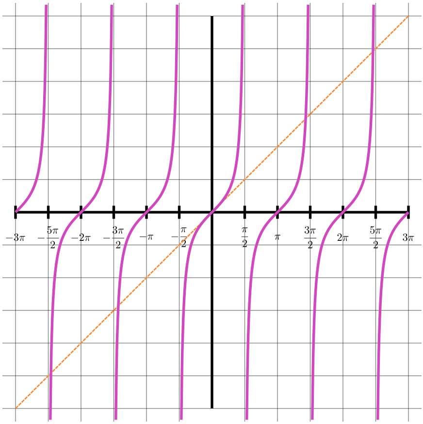

circular functions 10
Early in your students’ mathematical careers, they will have happily use the \(\sin^{- 1}\) key on their calculators to find angles in right-angled triangles when they know side lengths. This is probably one of their earliest encounters with the idea of the inverse of a function, although of course it is not framed this way.
At the start of our work on circular functions, we spent plenty of time separating these functions from right-angled triangles using the unit circle. From there, we generated graphs of the circular functions. It’s time to look at a similar process for their inverses. In right-angled triangles, we are only dealing with angles between \(0\) and \(\frac{\pi}{2}\). For each ratio of two sides, there is only one possible angle, so in this range, the inverse functions are well defined. However, when we look at angles outside this range, it is not immediately clear what the inverses of the functions might be. For example:
\(\sin\frac{\pi}{6} = \sin\frac{5\pi}{6} = \sin\frac{13\pi}{6} = \sin\frac{17\pi}{6} = \ldots = \frac{1}{2}\).
So is \(\sin^{- 1}\frac{1}{2} = \frac{\pi}{6}\text{or}\frac{5\pi}{6}\text{or}\frac{13\pi}{6}\text{or}\frac{17\pi}{6}\text{or}\ldots\) ?
and is \(\sin^{- 1}\left( - \frac{1}{2} \right) = - \frac{\pi}{6}\text{or}\frac{11\pi}{6}\text{or} - \frac{5\pi}{6}\text{or}\frac{7\pi}{6}\text{or}\ldots\) ?
Similar questions arise for the inverses of the other circular functions.
The answer is, in general, that we make the simplest possible choice, so, for example:
\[\begin{matrix} & \sin^{- 1}\frac{1}{2} = \frac{\pi}{6} & \sin^{- 1}\left( - \frac{1}{2} \right) = - \frac{\pi}{6} \\ \phantom{-} & & \\ & \cos^{- 1}\frac{1}{2} = \frac{\pi}{3} & \cos^{- 1}\left( - \frac{1}{2} \right) = \frac{2\pi}{3} \\ \phantom{-} & & \\ & \tan^{- 1}\frac{\sqrt{3}}{3} = \frac{\pi}{6} & \tan^{- 1}\left( - \frac{\sqrt{3}}{3} \right) = - \frac{\pi}{6} \\ \phantom{-} & & \end{matrix}\]
In other words, for \(\sin^{- 1}\) and \(\tan^{- 1}\) we will always choose a value between \(- \frac{\pi}{2}\) and \(\frac{\pi}{2}\) , whereas for \(\cos^{- 1}\) we will choose a value between \(0\) and \(\pi\).
In the language of functions, we can say:
\[\begin{array}{r} \sin^{- 1}:\{ x| - 1 \leq x \leq 1\} \rightarrow \{ y| - \frac{\pi}{2} \leq y \leq \frac{\pi}{2}\} \end{array}\]
\[\begin{array}{r} \tan^{- 1}:\mathbb{R} \rightarrow \{ y| - \frac{\pi}{2} \leq y \leq \frac{\pi}{2}\} \end{array}\]
\[\begin{array}{r} \cos^{- 1}:\{ x| - 1 \leq x \leq 1\} \rightarrow \{ y|0 \leq y \leq \pi\} \end{array}\]
Actually, for \(\sin\) and \(\sin^{- 1}\) to be inverses of each other, the domain of each has to be the range of the other. This means that the inverse of \(\sin^{- 1}\) is not \(\sin\), but the restriction of \(\sin\) to the domain \(\left\{ x| - \frac{\pi}{2} \leq x \leq \frac{\pi}{2} \right\}\). This is really a technicality too far at this stage in your students mathematical careers, but it could possibly come up in questions!
One way to approach this with your class would be to tell them all this, and then move on to some questions. But if you want your class to have a deeper insight into the inner workings of these inverse functions, you might consider thinking about them from the point of view of unit circles (the first part of this worksheet) or of graphs (the second part). Or even both!
Whatever you decide, there is still plenty in this worksheet to explore once you have your definitions in place.
When \(0 \leq \theta \leq \frac{\pi}{2}\)
What is \(\theta\) in terms of \(x\)?
What is \(\theta\) in terms of \(y\)?
What is \(\theta\) in terms of \(\frac{y}{x}\) ?

When \(0 \leq \theta \leq \frac{\pi}{2}\)
What is \(\theta\) in terms of \(x\)?
What is \(\theta\) in terms of \(y\)?
What is \(\theta\) in terms of \(\frac{y}{x}\) ?
\[\begin{matrix} & \cos\theta = x\qquad\sin\theta = y\qquad\tan\theta = \frac{y}{x} \\ \phantom{-} & \\ & \Rightarrow \theta = \cos^{- 1}x = \sin^{- 1}y = \tan^{- 1}\frac{y}{x} \end{matrix}\]
So long as \(0 \leq \theta \leq \frac{\pi}{2}\), there is only one value of \(\theta\) that makes \(x = \cos\theta\), \(y = \sin\theta\) , and \(\frac{y}{x} = \tan\theta\). So we know exactly what angle we mean by \(\cos^{- 1}x\), \(\sin^{- 1}y\), or \(\tan^{- 1}\frac{y}{x}\).
Use this diagram to find the values below (no calculator, of course):

\[\begin{matrix} \sin\frac{\pi}{3} & & & & & & & & & & & & \sin^{- 1}\frac{\sqrt{3}}{2} \\ \end{matrix}\]
Next, we'll look at the whole thing again from the point of view of graphs.
On the same set of axes, draw the graphs \(y=\sin x\) and \(x=\sin y\)
On the same set of axes, draw the graphs \(y=\sin x\) and \(x=\sin y\)

Here are the two graphs, plus the line \(x=\frac{1}{2}\).
Solve the equation \(\sin y = \frac{1}{2}\) and explain how your answer relates to the graphs.
\(\sin y = \frac{1}{2}\) has solutions
\[y = \frac{\pi}{6},\frac{5\pi}{6},\frac{13\pi}{6},\ldots - \frac{7\pi}{6}, - \frac{11\pi}{6}, - \frac{19\pi}{6},\ldots\]
and these values are where the graphs \(x = \sin y\) and \(x = \frac{1}{2}\) intersect.
How many values do you want for \(\sin^{- 1}\frac{1}{2}\) ?
How many times do you want the line \(x = \frac{1}{2}\) to intersect with the graph \(y = \sin^{- 1}x\) ?
Like any function, the function \(y = \sin^{- 1}x\) must be well-defined (that is, uniquely defined) for all values of \(x\) in its domain.
That means that the line \(x = \frac{1}{2}\) must intersect with the graph \(y = \sin^{- 1}x\) exactly once.
How can you adapt the graph \(x = \sin y\) to ensure that any vertical line between \(x = - 1\) and \(x = 1\) intersects it exactly once?

We need to choose just a small part of the curve \(x = \sin y\), making sure that it is big enough to intersect every vertical line between \(x = - 1\) and \(x = 1\), but small enough to make sure that no such vertical line intersects this section of the curve more than once.
There are many such segments . . . an infinite number, in fact.Some of the possibilities are coloured pink and green in this diagram.
We could choose any coloured section of the graph \(x = \sin y\), but it would be strange (though not impossible) to choose any segment other than the one that would mean \(\sin^{- 1}0 = 0\).
Which of these pink or green segments on the curve would correspond to the most sensible definition of the function \(\sin^{- 1}x\) ?

Only the pink segment here is the graph \(y = \sin^{- 1}x\).
What are the domain and range of the function \(f(x)=\sin^{-1}x\)?
What are the domain and range of the function \(f(x)=\sin^{-1}x\)?
The easiest way to see this is to look at the graph:
\(\text{domain}=\big\{x|-1\leq x\leq 1\big\}\)
\(\text{range}=\big\{y|-\frac{\pi}{2}\leq x\leq \frac{\pi}{2}\big\}\)
Draw the graph \(x = \cos y\).
On the same axes, draw the graph \(y = \cos^{- 1}x\).

Draw the graph \(x = \cos y\).
On the same axes, draw the graph \(y = \cos^{- 1}x\).


domain:
\[\{ x: - 1 \leq x \leq 1\}\]
range:
\[\left\{ y:0 \leq y \leq \pi \right\}\]
domain:
\[\mathbb{R}\]
range:
\[\left\{ y: - \frac{\pi}{2} < y < \frac{\pi}{2} \right\}\]

What are
\[\sin^{- 1}x + \cos^{- 1}x\]
when
\[x=0,\;x=\pm\frac{1}{2},\;\pm\frac{\sqrt 2}{2},\;\pm\frac{\sqrt 3}{2},\;\pm 1\]
\[\sin^{- 1}\frac{\sqrt{2}}{2} + \cos^{- 1}\frac{\sqrt{2}}{2} = \frac{\pi}{4} + \frac{\pi}{4} = \frac{\pi}{2}\]
\[\sin^{- 1}0 + \cos^{- 1}0 = 0 + \frac{\pi}{2} = \frac{\pi}{2}\]
\[\sin^{- 1}1 + \cos^{- 1}1 = \frac{\pi}{2} + 0 = \frac{\pi}{2}\]
\[\sin^{- 1}( - 1) + \cos^{- 1}( - 1) = - \frac{\pi}{2} + \pi = \frac{\pi}{2}\]
\[\sin^{- 1}\left(-\frac{\sqrt{2}}{2}\right) + \cos^{- 1}\left(-\frac{\sqrt{2}}{2}\right) = -\frac{\pi}{4} + \frac{3\pi}{4} = \frac{\pi}{2}\]
\[\sin^{- 1}\frac{1}{2} + \cos^{- 1}\frac{1}{2} = \frac{\pi}{6} + \frac{\pi}{3} = \frac{\pi}{2}\]
\[\sin^{- 1}\left(-\frac{\sqrt{3}}{2}\right) + \cos^{- 1}\left(-\frac{\sqrt{3}}{2}\right) = -\frac{\pi}{3} + \frac{5\pi}{6} = \frac{\pi}{2}\]

\(\sin^{- 1}x + \cos^{- 1}x = \theta + \varphi = \frac{\pi}{2}\) when \(x\) is positive.
We can also look at graphs for this, which will enable us to deal with negative values of \(x\).
On the same set of axes, draw the graphs \(y = \sin^{- 1}x\) and \(y = \cos^{- 1}x\)
Here are the graphs \(y = \sin^{- 1}x\) and \(y = \cos^{- 1}x\).

Where do they cross?
They cross at \(\left( \frac{\sqrt{2}}{2},\frac{\pi}{4} \right)\). The easiest way to see this is by looking at the symmetry of the diagram.
Alternatively, note that \[\sin y = \cos y \Rightarrow \tan y = 1 \Rightarrow y = \frac{\pi}{4}\].
Use the graph to find\(\sin^{- 1}x + \cos^{- 1}x\) for any value of \(x\).
Use the graph to find\(\sin^{- 1}x + \cos^{- 1}x\) for any value of \(x\).
Draw any vertical line that intersects both of the curves.
What is the average of the \(y\) coordinates of the intersection points?
What is the sum of the \(y\) coordinates of the intersection points?
Symmetry shows easily that their average is \(\frac{\pi}{4}\), so their sum is \(\frac{\pi}{2}\), which means
\(\sin^{- 1}x + \cos^{- 1}x = \frac{\pi}{2}\) for any \(x\) between \(- 1\) and \(1\).
differentials of inverse circular functions
If \(y=\sin^{-1}x\), what is \(\frac{\mathrm{d}x}{\mathrm{d}y}\) in terms of \(y\) ?
If \(y=\sin^{-1}x\), what is \(\frac{\mathrm{d}x}{\mathrm{d}y}\) in terms of \(y\) ?
If \(y=\sin^{-1}x\), what is \(\cos y\)?
If \(y=\sin^{-1}x\), what is \(\cos y\)?
What are \(\frac{\mathrm{d}x}{\mathrm{d}y}\text{ and }\frac{\mathrm{d}y}{\mathrm{d}x}\) in terms of \(x\) ?
What are \(\frac{\mathrm{d}x}{\mathrm{d}y}\text{ and }\frac{\mathrm{d}y}{\mathrm{d}x}\) in terms of \(x\) ?
Follow the same method to find \[\frac{\mathrm{d}}{\mathrm{d}y}\cos^{-1}x\]
Follow the same method to find \[\frac{\mathrm{d}}{\mathrm{d}y}\cos^{-1}x\]
Follow the same method to find \[\frac{\mathrm{d}}{\mathrm{d}y}\tan^{-1}x\]
Follow the same method to find \[\frac{\mathrm{d}}{\mathrm{d}y}\tan^{-1}x\]
Use the substitution \(u = \sin^{- 1}x\) for the integral \[\int \frac{1}{\sqrt{1-x^2}}\;\mathrm{d}x\]
Use the substitution \(u = \sin^{- 1}x\) for the integral \[\int \frac{1}{\sqrt{1-x^2}}\;\mathrm{d}x\]
\[\begin{aligned} \int\frac{1}{\sqrt{1 - x^{2}}}\;\mathrm{d}x & = \int\frac{1}{\sqrt{1 - x^{2}}}\,\frac{\mathrm{d}x}{\mathrm{d}u}\mathrm{d}u \\ & = \int\frac{1}{\sqrt{1 - x^{2}}}\sqrt{1 - x^{2}}\;\mathrm{d}u \\ & = \int \mathrm{d}u \\ & = u + c \\ & = \sin^{- 1}x + c \end{aligned}\]
In practice, you might write the subsitution as \(x=\sin u\). Try it this way.
Use the subsitution \(x=\sin u\) for the integral \[\int \frac{1}{\sqrt{1-x^2}}\;\mathrm{d}x\]
\[\begin{aligned} x = \sin u \Rightarrow \frac{\mathrm{d}x}{\mathrm{d}u} & = \cos u \\ & = \pm \sqrt{1 - \sin^{2}u} \\ & = \pm \sqrt{1 - x^{2}} \end{aligned}\]
At this point, it is really important to remember that the actual substitution is \(u=\sin^{-1}x\) so that \(\frac{\mathrm{d}x}{\mathrm{d}u}>0\)
\[\begin{aligned} \int\frac{1}{\sqrt{1 - x^{2}}}\;\mathrm{d}x & = \int\frac{1}{\sqrt{1 - x^{2}}}\;\frac{\mathrm{d}x}{\mathrm{d}u}\mathrm{d}u \\ & = \int\frac{1}{\sqrt{1 - x^{2}}}\sqrt{1 - x^{2}}\;\mathrm{d}u \\ & = \int \mathrm{d}u \\ & = u + c \\ & = \sin^{- 1}x + c \end{aligned}\]
Use the subsitution \(x=\cos u\) for the integral \[\int \frac{1}{\sqrt{1-x^2}}\;\mathrm{d}x\]
\[\begin{aligned} x = \cos u \Rightarrow \frac{\mathrm{d}x}{\mathrm{d}u} & = -\sin u \\ & = \pm \sqrt{1 - \cos^{2}u} \\ & = \pm \sqrt{1 - x^{2}} \end{aligned}\]
At this point, it is really important to remember that the actual substitution is \(u=\cos^{-1}x\) so that \(\frac{\mathrm{d}x}{\mathrm{d}u}<0\)
\[\begin{aligned} \int\frac{1}{\sqrt{1 - x^{2}}}\;\mathrm{d}x & = \int\frac{1}{\sqrt{1 - x^{2}}}\;\frac{\mathrm{d}x}{\mathrm{d}u}\mathrm{d}u \\ & = -\int\frac{1}{\sqrt{1 - x^{2}}}\sqrt{1 - x^{2}}\;\mathrm{d}u \\ & = -\int \mathrm{d}u \\ & = -u + c \\ & = -\cos^{- 1}x + c \end{aligned}\]
Explain why it is possible that both
\[\int \frac{1}{\sqrt{1-x^2}}\;\mathrm{d}x=\sin^{-1}x+c\]and
\[\int \frac{1}{\sqrt{1-x^2}}\;\mathrm{d}x=-\cos^{-1}x+c\]Explain why it is possible that both
\[\int \frac{1}{\sqrt{1-x^2}}\;\mathrm{d}x=\sin^{-1}x+c\]and
\[\int \frac{1}{\sqrt{1-x^2}}\;\mathrm{d}x=-\cos^{-1}x+c\]Remember that
\[\sin^{-1}x+\cos^{-1}x=\frac{\pi}{2}\]so the two integrals differ by \(\frac{\pi}{2}\). That is, the "c" is different in each case.
Use the substitution \(x = \tan u\) for the integral:
\[\begin{aligned} \int\frac{1}{1 + x^{2}}\;\mathrm{d}x \end{aligned}\]
Use the substitution \(x = \tan u\) for the integral:
\[\begin{aligned} \int\frac{1}{1 + x^{2}}\;\mathrm{d}x \end{aligned}\]
\[\begin{aligned} x = \tan u \Rightarrow \frac{\mathrm{d}x}{\mathrm{d}u} & = \sec^{2}u \\ & = 1 + \tan^{2}u \\ & = 1 + x^{2} \end{aligned}\]
\[\begin{aligned} \int\frac{1}{1 + x^{2}}\;\mathrm{d}x & = \int\frac{1}{1 + x^{2}}\;\frac{\mathrm{d}x}{\mathrm{d}u}\mathrm{d}u \\ & = \int\frac{1}{1 + x^{2}}\left( 1 + x^{2} \right)\;\mathrm{d}u \\ & = \int \mathrm{d}u \\ & = u + c \\ & = \tan^{- 1}x + c \end{aligned}\]
Here, although the substitution is actually \(u=\tan^{-1}x\), there is no difficulty with the signs as there was before.